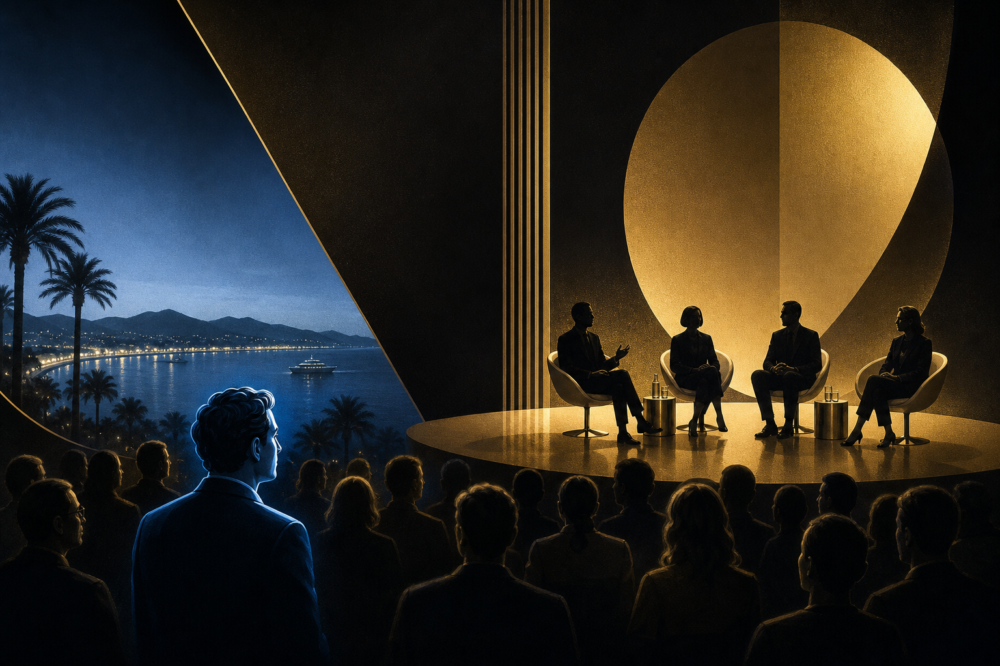

Key Takeaways
- The most valuable sessions at Cannes Lions are never the keynotes — they're the buried panels in secondary stages
- This year's hidden gem: [INSERT: specific panel title and why it matters]
- The Cannes programming algorithm rewards celebrity, not substance — Contrarian goes where the substance is
- Three questions every panel should answer but almost never does
[FRAMEWORK — Update with specific panel observations from Day 3]
The Cannes Lions programme guide is 247 pages long. It contains 386 sessions across 14 stages. It has been optimised for one thing: getting you into the room with the most famous speaker.
This is a mistake.
The panel that will matter most from Cannes 2026 is not happening on the Lumière stage with 3,000 seats and a celebrity moderator. It is happening in a 120-seat room on the third floor of the Palais, scheduled against a lunch break, with a title so bland that your eyes glaze past it.
And yet, the people in that room — the ones who found it by scanning the programme with purpose rather than following the crowd — are hearing the conversation that will define the next 18 months of the industry.
The Session: [INSERT Title, Stage, Time]
[INSERT: Detailed description of the panel — who's speaking, what the topic is, why it matters]
Why nobody's talking about it: [INSERT: The scheduling conflict, the uninspiring title, the lack of celebrity draw]
Why you should be: [INSERT: The specific insight or announcement that makes this session critical]

What We Heard
[INSERT: Key quotes from panellists, audience reactions, the specific moment when the room shifted]
Quote 1: "[INSERT]" — [Speaker Name, Title]
Quote 2: "[INSERT]" — [Speaker Name, Title]
The moment the room changed: [INSERT: Description of the turning point in the conversation]
Why This Matters Beyond Cannes
The reason The Upside Journal covers the overlooked panels isn't contrarianism for its own sake. It's because the overlooked sessions are where honesty lives.
Main-stage keynotes at Cannes are performances. They are rehearsed, approved by comms teams, and designed to generate social media clips. The content is safe by design.
Side-stage panels, particularly those with practitioners rather than executives, are where people say what they actually think. The data is real. The disagreements are genuine. The recommendations are actionable.
Three questions this panel answered that the main stage won't:
1. [INSERT: Specific question and answer about industry direction] 2. [INSERT: Specific question and answer about practical implementation] 3. [INSERT: Specific question and answer about what's failing]
The Contrarian Scorecard: Day 3 Panel Rankings
| Session | Stage | Audience Size | Substance Rating | Media Coverage | Inverse Value* | |---------|-------|---------------|-----------------|----------------|----------------| | [INSERT] | [INSERT] | [INSERT] | ★★★★★ | Low | HIGH | | [INSERT] | [INSERT] | [INSERT] | ★★★★ | Medium | MEDIUM | | [INSERT] | [INSERT] | [INSERT] | ★★★ | High | LOW |
Inverse Value = Substance ÷ Media Coverage. The higher the ratio, the more undervalued the session.
How to Find Tomorrow's Hidden Session
A practical framework for filtering the Cannes programme:
1. Ignore any session with "future of" in the title — it will be speculative fluff 2. Look for sessions with more than three panellists — larger panels signal conflicting viewpoints, which means real debate 3. Check the speaker bios for operators, not executives — a VP of Marketing who runs campaigns will say more useful things than a CEO who approves them 4. Cross-reference with the evening events — if a panellist is also hosting a private dinner, they're signalling that the session is a conversation-starter, not the conversation itself
Watch: Our Cannes film festival insider on 2026 selections - The Screen Podcast
https://www.youtube.com/watch?v=XZ2LD-zVyu0
Video by Screen International
FAQ
Q: How do you find the best panels at Cannes Lions? A: Look for sessions on secondary stages with practitioner-level speakers, scheduled against popular sessions. These tend to have higher substance-to-hype ratios than main-stage keynotes.
Q: What makes a Cannes Lions panel worth attending? A: The best panels feature genuine disagreement between speakers, share real data or case studies, and address problems rather than celebrate successes.
Q: Does The Upside Journal cover Cannes Lions live? A: Yes — The Upside Journal's Beyond the Beach and Contrarian series provide real-time analysis from the ground at theupsidejournal.com, with daily dispatches on X, Instagram, and TikTok.
Published in The Upside Journal — live from Cannes Lions 2026.
About the Author Chaste Inegbedion is the co-founder of The Upside Journal and CEO of ConcordeApp. He writes at the intersection of technology, creativity, and global development.